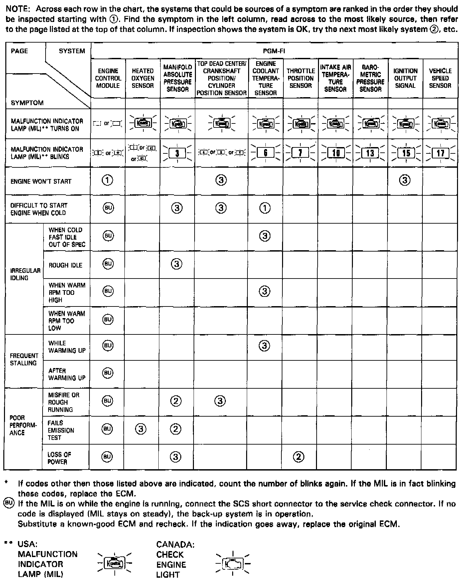
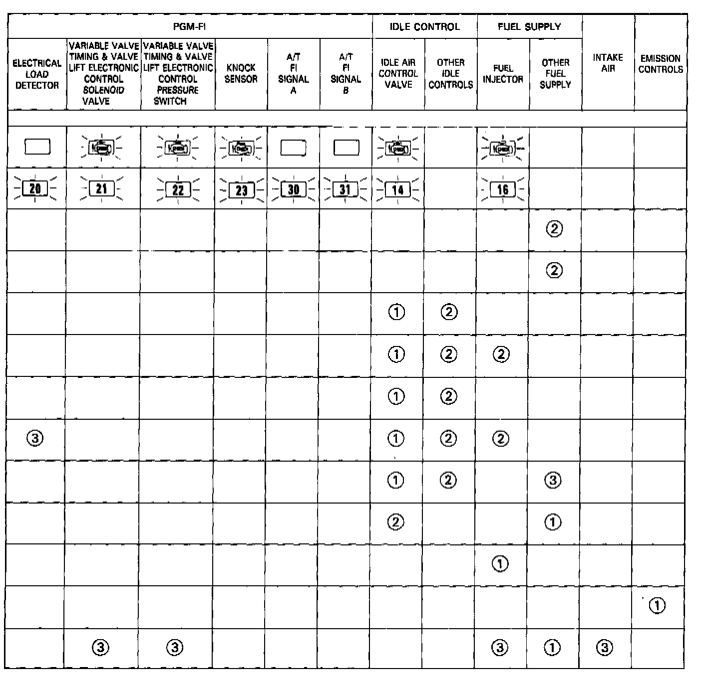

DTC List - Fuel and Emissions
Diagnostic Trouble Code Index:
If codes other than those in the image are indicated, verify the code. If the code indicated is not listed in the image, replace the Engine Control Module (ECM).
The Malfunction Indicator Light (MIL) may come on, indicating a system problem when, in fact, there is a poor or intermittent electrical connection. First, check the electrical connections, clean or repair connections if necessary.
The MIL and D4 indicator light may light simultaneously when the Diagnostic Trouble Code (DTC) 6, 7 or 17 is lit. Check the Programmed Fuel Injection (PGM-FI) system according to the PGM-FI system troubleshooting, then recheck the D4 indicator light. If it lights, see Automatic Transmissions Troubleshooting Chart.
The MIL does not come on when there is a malfunction in the A/T F1 signal or Electrical Load Detector (ELD) circuits. However, it will indicate the codes when the Service Check Connector is shorted.

